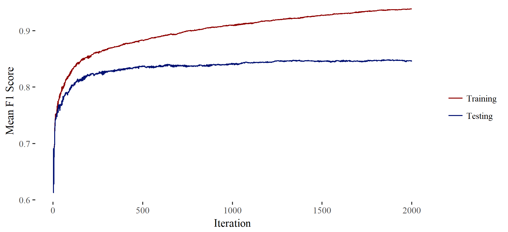

sboost is an R package for solving classification problems. The package started as an exercise to learn how to integrate C++ with R and to learn how to build R packages. The end result is a fast implementation of Freund and Schapire adaptive boosting, also known as AdaBoost (Freund & Schapire, 1997). This implementation works uses decision stumps as the weak classifier when boosting. The package was accepted onto the Comprehensive R Archive Network (CRAN). See my GitHub sboost repository for source code and installation instructions, or the CRAN sboost page for package details.
The sboost package uses AdaBoost to combine and improve the performance of weak classifiers called decision stumps. Decision stumps are classifiers that learns to classify a feature vector into one of two outcomes. When finding a decision stump, each feature is analyzed separately and the decision stump with the greatest accuracy is chosen.
For categorical features, the categories are separated into one of the two outcomes based on the weighted accuracy of instances within that category. For example, if for instances 1 to 9 a feature is [1, 1, 1, 2, 2, 2, 3, 3, 3] and outcomes are [1, 1, 1, -1, -1, 1, 1, 1, -1], then categories 1 and 3 will be predicted as 1 and category 2 will be predicted as -1. The overall accuracy for this stump will be 7/9 or 78% (assuming equal weight).
For each pair of sequential feature values (a and b where a ≠ b) in a numerical feature, the accuracy for a division of the data at the point between the a and b is calculated. Given the example above, if that feature was numeric rather than categorical, the optimal division would be < 1.5 predicted as 1 and > 1.5 predicted as -1 with an overall accuracy of 6/9 or 67% (assuming an equal weight).
Whichever division of all features produced the greatest accuracy is chosen to be the decision stump for that round. AdaBoost is then implemented on the resulting weak classifier and the process is repeated with updated weights.
AdaBoost requires the weighted error, ε, of the best stump for a given round (weighted error = 1 - weighted accuracy). The amount of vote, α, for that stump in the final outcome is given by α = .5 * ln((1 - ε) / ε). Each of the weights, ω, is updated by ω = ω * exp(-α) for correct predictions and ω = ω * exp(α) for incorrect predictions. This results in weights that are scaled up for incorrect classification and scaled down for correct classification. These weights are used when training the next stump and the process is repeated for a specified number of iterations.
To find a prediction for a given feature vector, the prediction for each stump si as -1 or 1 is multiplied by the vote vi and all sivi are added together. If this sum is greater than zero, 1 is the final prediction, otherwise -1 is the final prediction.
This type of classifier is non-linear, but the prediction mechanism for a given feature vector is less of a black-box than other non-linear classifiers. Since each stump is based on only one feature, the influence of each feature on the final prediction can be calculated. This gives the classifier transparency comparable to a linear classifier with greater flexibility to fit non-linear data.
This algorithm was employed during participation in a Kaggle competition as part of a machine learning course at The University of Utah in 2016. The competition involved classifying malware from normal android apps (Dimjašević, Atzeni, Ugrina, & Rakamarić, 2016).
Four fold cross validation was used to find the best number of iterations to use. The F1 scores of the training sets continually increased and the F1 scores on the testing sets remained at a fairly constant 85% with about 1% standard deviation (Figures 1 and 2). The classifier was consistently over fit to the training; however, errors on the testing sets seemed to remain constant after a few hundred iterations. Any classifier made with over a thousand iterations on this algorithm would be a good candidate to submit to the competition.
The classifier resulting from this algorithm outperformed my implementations of ID3, SVM, tree ensembles, and Perceptron. Predictions from the developmental version of sboost were my final submission.

Marko Dimjašević, Simone Atzeni, Ivo Ugrina, and Zvonimir Rakamarić. (2016). Evaluation of Android Malware Detection Based on System Calls. Proceedings of the International Workshop on Security and Privacy Analytics (IWSPA) (text)
Yoav Freund and Robert E. Schapire. (1997). A Decision-Theoretic Generalization of On-Line Learning and an Application to Boosting. Journal of Computer and System Sciences, 55, 119-139. (text)